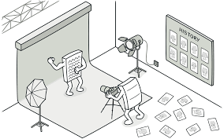
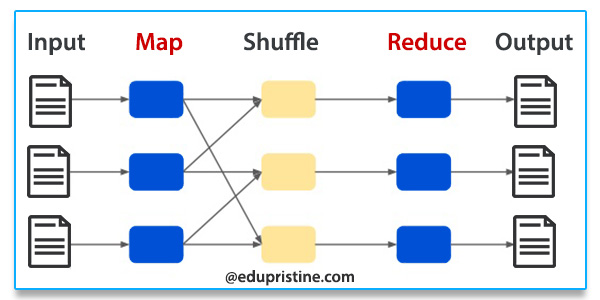
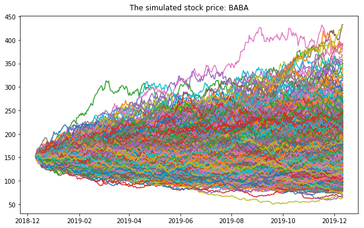
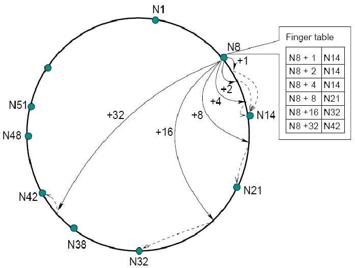

|
I am currently a second year graduate student at the University of Illinois at Chicago where I am advised by Prof. Mark Grechanik. My current research is in the automatic generation of research units using probabilistic modelling and deep learning techniques. In the past, I have had the privilege of working as a specialist software engineer at Société Générale developing an in-house workflow solution along with building service layer capabilities of a risk calculator. |
{kind=link}
|
My interests revolve around object oriented languages, functional programming, cloud computing and software engineering. In my free time, I binge on mystery movies and sports like soccer and cricket. |
|
|
|  |
An annotation based compile time verifier of correct implementation of any design pattern. [Description] [Code] |
|  |
A pipelined map-reduce implementation to analyze DBLP data for computation of metrics such as authorship score, co-author count with sorted results. [Description] [Code] |
|  |
A Monte-Carlo based Spark implementation of simulating stock investment patterns. [Description] [Code] |

|
A simulator which simulates a federation of data centres along with mimicking a map-reduce load. [Description] [Code] |
|  |
A simulator which simulates a fault tolerant network of computing nodes using the Chord algorithm for data lookups and rearrangements. [Description] [Code] |
|
A GraphQL client used to fetch metadata information related to GitHub repositories. [Description] [Code] |